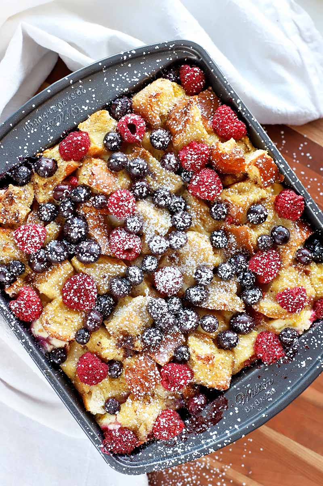

Berry Brunch Bake

Description
This giant pancake is easy to make and fun to decorate. A great
one-pot meal when you have many hungry people!
- Prep time: 15 minutes
- Cook time: 20 minutes
- Servings: 8
Ingredients
- 125 mL (½ cup) whole wheat flour
- 125 mL (½ cup) all-purpose flour
- 310 mL (1 ¼ cups) lower fat milk or unsweetened fortified plant-based beverage
- 4 eggs
- 5 mL (1 tsp) vanilla extract
- 20 mL (1 ½ tbsp) honey
- 10 mL (2 tsp) non-hydrogenated margarine
- 45 mL (3 tbsp) vegetable oil
- 375 mL (1 ½ cups) frozen berries
- 125 mL (½ cup) almonds, slivered or chopped
Steps
- Preheat the oven to 250 °C (475 °F).
- In a blender, place whole wheat flour, all-purpose flour, milk, eggs, vanilla, and honey. Blend on high until smooth.
- In a 28x33 cm (11x13 inch) baking dish, put margarine and oil and place into pre-heated oven for 3 minutes, until margarine is melted.
- Carefully and quickly, remove the hot baking dish from the oven and pour batter into the hot dish. Scatter top with berries and return to the oven immediately.
- Bake for 20 minutes or until the batter is puffed and an inserted toothpick comes out clean.
- Top with almonds and enjoy!